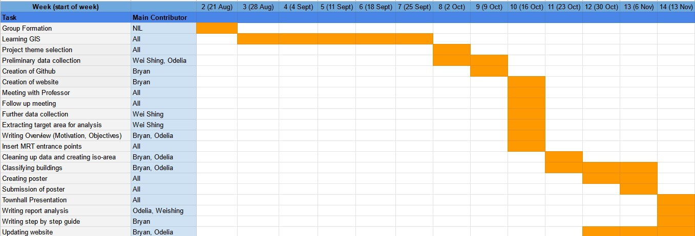

Overview
Overview
Our project, Mass Relevant Transport aims to discover whether the new Thomson East Coast Line Stage 4 opening in 2024 will be effective in serving the transportation needs of the mass pubic. The Mass Rapid Transport aka MRT System is a rail network that is the backbone of Singapore’s public transport system. The infrastructure transport system was developed in light of Singapore’s limited land space and worsening traffic congestion. As part of its future plans, the Singapore government plans to expand the rail network so as to make Singapore more interconnected which will help the public to reduce waiting time and have a faster journey. The new Thomson East Coast Line aims to help relieve crowding on the East West and North South Lines, improving the efficacy of the transport system. It is said that more than 240 000 households will be within a 10 min walk from a TEL MRT station once the TEL is fully completed.
Motivation
Our team is truly interested to explore just how accurate the claims of TEL’s expected efficiency truly are. We hope to make use of publicly available data and network analysis to examine whether the TEL will live up to predictions of its efficacy and achieve its goals.
Our project aims to understand how many people this new line will serve through creating catchment areas slated to be part of the Thomson East Coast Stage 4. Through creating a walking network catchment, we will be able to map out the number of residents potentially served within a 800m walk. We will also be able to observe the number of buildings that fall within these catchment areas and through that determine whether the new stations are built in prime locations with a high population density.
Project Tasks
The Project tasks are as follows:
To identify the type of buildings near TEL Stage 4 stations so as to understand the groups that are mostly affected by the TEL stations.
Compare methodologies between buffers and iso-areas
Utilize network analysis via iso-areas to delineate the catchment area of the Thomson East Coast Stage 4 MRT station and from there derive the accessibility of the TEL stations
In line with this vision, our main area of focus is to determine the accessibility of residential areas of the Thomson East Coast Stage 4 MRT station through proximity analysis. From the results we have attained, we hope to recommend how best to support the new MRT stations to serve the mass public more efficiently and ensure that public transport remain convenient and accessible to Singaporeans.use
The Data
The following data sets will be used
Project Timeline
